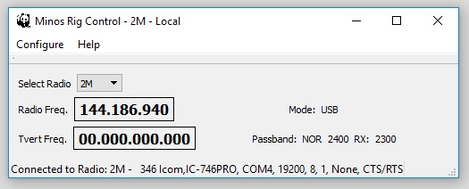
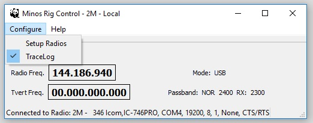
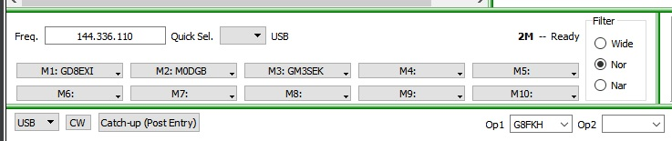
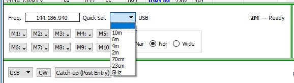
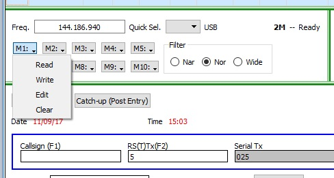
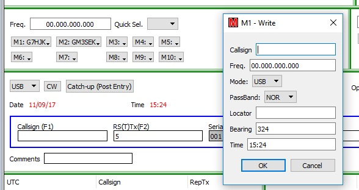

Minos Control Apps Help
This is a brief description of the beta software. As with all beta software is subject to change and the screen layouts may not reflect the current version.
Introduction
Minos Control Apps allow the control of a rotator and radio using a seperate rotator and rig control applications both communicating via serial interdfaces to the respective devices. Control can also be achieved from Minos Logger and the rotator application can also be used standalone. While the program can control a range of rotator controllers and radios using the hamlib library, it is not possible to test all the rotator controllers and radios as they are not available to the developers. Also, some controllers may not support all the commands available or we do not fully understand a particular controllers operation. See list of rotators and controllers which are noted as tested. We welcome feedback if you have any information or changes that may be required to support untested rotator and radio models.
The control applications can connect to one or more log pages, or multiple apps can connect to multiple logs. For example you can have two rotator apps one called "70cm Array" and the other called "2m Array", both running at the same time and connected to two different contest logs. The same applies to radio control. You can group apps together to apply to one contest log.
Rotator App
- Minos Rotator is a standalone application that connects to a rotator controller via a Serial Port.
- Connects to Minos Logger Application.
- Operates in two modes - when standalone it is in "Local" mode, when connected to logger it is in "Logger" mode
- Can control a family of rotators and radios using the hamlib library.
- Five Antennas can be configured and selected from a pull down menu, one antenna can be selected for control.
- Antenna can be controlled from the rotator panel or from the buttons in the logger application.
- Overlap rotators are supported in line with hamlib library.
- Control buttons in application and logger - Left (CCW), Right (CW), Stop and Turn (Rotate to bearing)
- Rotator Application Displays Bearing, Backbearing, Overlap Status, Antenna Offset and actual rotator bearing.
- Logger shows rotator status - Rotating CW, Rotating CCW, Rotating to bearing, Stop, Disconnected, Ready.
- Logger Shows Bearing - red indicates Overlap.
- Logger calculates bearing from archive or by entering a locator.
- Rotator application calculates shortest distance to bearing, using overlap.
- Rotator application can log bearing changes against time in a text log.
Rig App
- Minos Rig Control is a standalone application that connects to a Radio via CAT Serial Port.
- Rig Control App does not have any controls to control the radio and is a service to other apps.
- Five Radios can be configured and selected via a tab dialog
- Shows Frequency Radio is tuned to
- If transverter conversion is selected shows the transverted frequency
- Shows currently selected Passband and Passband from the radio Rx
Rig Control from Logger
- Quick Select - Allows quick change of frequency to another band
- Frequency Input - Frequency can be changed in this box
- Mode Change - In QSO Entry Frame. Note MGM does not currently select a mode on the radio
- Filter - Select radio passband filter. Work in progress!
- Ten memories. CTRL-1 to CTRL-0 selects memory menu, r selects Read, w selects Write, e selects Edit, c selects Clear current memory
- Data in QSO fields will load memory during a write
- Memory Read will load QSO fields with data and transfer bearing to rotator target bearing field
This shows the logger with a connected radio and rotator. The rigcontrol panel and the rotcontrol panel are visible in logger.
Note! When the apps are connected to the logger, they show "Logger" in the title and you are unable to select a different radio or antenna. Selection is via the App and Logger Connection Configuration.
Configure Apps for Logger
Start Minos which will display the following splash screen

From the splash screen select the Apps button, or Logger Only if you do not want to run any application.
The Minos App Configuration screen should appear

If there are no entries, select New Entry to get a configuration entry box.
For each application setup this information.
Program - Use the selection button on the right to navigate to the executable directory for either MqtRigControl.exe or MqtRotator.exe. Select the executable to obtain the path and executable name in the Program box.
Parameters - Enter the name of the antenna or radio you used when setting up rigcontrol app and rotator control app.
Note! You can't select a radio or antenna from the apps when they are connected to the logger. Selection is achieved from the parameters box.
Note! This is case sensitive.
Home Directory - Enter a period . in this box
Action - Select Run Locally to allow the app to start. To disable an app select No Action
In the box above the Action group, enter a name for this app - this will be used in logger. It can be the same as the antenna or radio name, or completely different.
Repeat for the apps that you want to use.
Click Save to save you app configuration.
Connecting Applications to Logger
With a contest setup in logger select Contest Details, this will show the contest detail dialog box.

This box is also available at contest setup.
Next to the Apps Selection box, select Edit.

This allows you to create a new Setting and add applications that you wish to run from that setting.
In the right hand list, add the name of the application you want to start in this setting.
Note! This is not the antenna name or radio name.
Note! This is case sensitive.
Select save when you have finished editing the settings
From the Apps Drop Down box, select the Settings Group you want to attach to this log.
You can select None if you don't want any applications attached to a log.
The logger may need to restart for the changes to take effect.
Configure Menu

Menu Items to Configure Rotator
Edit Presets - Configuring Presets Change name and target bearing for each Bearing Preset.
Setup Antennas - Setup Antennas, Names and Rotator Parameters.
Log Heading - Rotator Position Log Setup Bearing Log Path, Name and Enable Log
TraceLog - Trace Log Check item to enable tracelog, uncheck to disable tracelog.
Setup Antennas
Upto five named antennas can be configured in the Rotator Application.
Note these names are important as they are used to select the antenna from logger
From the Configure drop down menu, select Setup Antennas. The dialog box below should appear.
Note! If you change any value in the Current Selected antenna, you will be prompted to reload the values. You can choose to skip and the values will be loaded when the program is restarted.

Antenna Name
Enter the name to be given to a rotator configuration, for example 6 metre or 70cm.
Note! A name is required to allow an antenna to be selected and is used by logger to select the antenna.
Rotator Model
The drop down shows a list of the rotator models (controller protocols) that are currently supported. Note not all rotator models have been tested with this program. A list of tested rotator models is shown here Supported Rotators. If your model is not on the list please help to test and provide feedback on possible errors.

S Stop - Check box
Check box if your rotator is set to South Stop. Future Feature, if you require to control a rotator with a south stop, please contact the developers.
Overlap - Check box
Check box to support rotator overlap. Some rototor models do not support overlap and the rotator in the library may not support overlap either. Beta testers required.
Unchecked to turn off overlap. Rotator will only rotate between 0 - 360 degrees.
Note! If Overlap is unchecked then the Overlap box will not be displayed on the Rotator Display.
Note! If Overlap is unchecked and an antenna is sitting in an overlap region, you may not be able to rotate the antenna. The antenna will need to be manually moved < 360 or > 0
Offset
Enter an antenna offset value if required. Value can be max +90/-90. To support antenna mounted offset from rotator bearing. Rotator bearing is always shown in Actual on status line.
Comport
Drop down box to select Serial Comport Rotator is connected to on the computer
Speed
Drop down list to select Serial Port Baud Rate
Data Bits
Drop down list to select Serial Port Number of Data Bits.
Stop Bits
Drop down list to select Serial Port Stop Bit value.
Parity
Drop down list to select Serial Port Parity Bit value.
Handshake
Drop down list to select Serial Port Handshake.
Click OK to save the Antenna Settings, Cancel to quit without saving.
Configuring Presets

Enter a name or callsign in the name box and the target bearing in the bearing box.
Click Save or Enter to close and Save
Click Cancel or ESC to close with no save.
Rotator Control Screen

Screen Functions
Bearing Display
Main
Shows the forward compass bearing.
Back
Shows the reverse compass bearing.
Overlap
When the rotator is in an overlap region, the indicator shows red.
Note! If Overlap is unchecked in Antenna Setup, or the rotator does not support Overlap, then the Overlap box will not be displayed on the Rotator Display.
>Antenna Select
Antenna Select drop down box. Shows list of antennas, select to connect to rotator controller. If an error occurs reselect the antenna to try connection again.
Note! Minos Rotator will automatically connect to a named antenna. If an error occurs, a disconnection will occur, please reselect the antenna via the drop down to try again. If communication fails again, please verify settings in rotator controller or Minos Rotator.
Note! If a change to settings is made to the current selected antenna, then you will be prompted to reload the settings.
Note! An antenna must have a name to allow selection.
Note! This Antenna Select box is not available in "Logger" mode.

Bearing
Manually type in a target bearing. Will only allow values that the selected rotator will support. Hit Enter to initiate rotate to, or Control T. The bearing will be highlighted to allow quick entry of new bearings.

Turn Button
Press button to rotate antenna to target bearing. Shortcut key is Control T or Enter.
Stop Button
Press button to stop rotation. Shortcut key is Control S.
Left (CCW) Button
Press button to start counter-clockwise rotation. Shortcut key is Control L. NOTE! This is a latch button, press again to stop.
While rotating the bearing is checked for end stop, if reached a stop will be automatically issued.
Right (CW) Button
Press button to start clockwise rotation. Shortcut key is Control R. NOTE! This is a latch button, press again to stop.
While rotating the bearing is checked for end stop, if reached a stop will be automatically issued.
NOTE! If a control button is selected while the rotator is moving, a stop command is issued before the selected command is issued.

Preset Buttons
Upto ten headings can be preset with the callsign of station or heading name.
Press Preset to turn to heading. Shortcut key is Control -number of preset- Preset 10 is Control 0
Compass Dial
Provides graphical indication of compass bearing.
Status Bar
Provides status information
Shows Rotator connection status and serial parameters.
Offset - Shows antenna Offset set.
Actual - Shows the actual rotator bearing.
Rotator Support CW/CCW Commands
Some rotator controllers do not support a Rotate Left (CW - Clockwise) or Rotate Right (CCW - Counter clockwise) Command. See table below
To allow the CW and CCW buttons to function, the command rotate to minAzimuth (typically 0 degrees) is sent for CCW command and the command rotate to maxAzimuth (typcially 360 degrees) is sent for CW. The CW and CCW buttons are latching, selecting the buttons again will stop rotation. Rotation will also stop when the rotator reaches the endstop if a stop command is not sent first.
Logger Rotator Controls

The rotator buttons will only appear when the Rotator application has connected to the logger.
From left to right the rotator controls are as follows.
Bearing entry box. Enter a bearing into this box and click the Turn button to rotate to the bearing. Only bearings supported by the rotator can be entered. If a QRA locator is entered into the Locator box, the calculated bearing can also be used. If a callsign is entered and found in the archive, the locator can be transfered using F12 and this bearing can be used by the rotator application. In both cases click the Turn button or Control-T to rotate to the bearing.
The rotator bearing is shown next. When the rotator is in an overlap region, the rotator bearing will be red.
Left (CCW) Button - Rotate counterclockwise. If rotator is at endstop, no action is taken. Shortcut key is Control-L. Note! This is a latching button, press button to cancel or Stop button.
Turn - Turn to the bearing in the bearing box.Shortcut key is Control T.
Left (CW) Button - Rotate clockwise. If rotator is at endstop, no action is taken. Shortcut key is Control-R. Note! This is a latching button, press button to cancel or Stop button.
Left Stop Button - Stop all rotation. Shortcut key is Control S.
Nudge buttons +/- will nudge the rotator 3 degrees every time the button is pressed.
NOTE! If a button is selected when rotator is moving, a Stop command is issued before the selected command is issued.
Rotator Status Messages.

Above the row of boxes is the selected Antenna Name.
Rotator Position Log

The Rotator bearing can be logged during a contest. Select Log Heading from the Configure Menu.
Log Directory - sets the directory to log the bearing.
Log Filename - sets the filename of the log.
Note! Bearings will continue to be appended to this file every time Minos Rotator is started. If you want a new file, either copy and delete this file or rename the file name here.
Bearing Difference - The bearing difference before a new bearing is logged.
Logging Enabled - Checked bearings will be logged, Unchecked, no logging of bearings.
OK - Save settings.
Cancel - Quit without saving settings.
Example Log
Mon Jun 12 18:19:46 2017 Bearing is 320 Degrees
Mon Jun 12 18:19:47 2017 Bearing is 324 Degrees
Mon Jun 12 18:19:48 2017 Bearing is 326 Degrees
Mon Jun 12 18:19:49 2017 Bearing is 326 Degrees
Trace Log
A tracelog is available for diagnostic purposes. This can be enabled from the Configure menu where the TraceLog line can be enabled or disabled by checking the menu item. It is suggested that this should be disabled in normal operation.
Example tracelog with current antenna settings.
09:28:07.731 *** Antenna Updated ***
09:28:07.731 Rotator Name = Test Antenna
09:28:07.731 Rotator Model = 603 Yaesu,GS-232B
09:28:07.731 Rotator Number = 603
09:28:07.731 Rotator Comport = COM8
09:28:07.731 Baudrate = 19200
09:28:07.731 Databits = 8
09:28:07.731 Stop bits = 1
09:28:07.731 Handshake = 0
09:28:07.731 Antenna Offset = 0
09:28:07.731 Current Max Azimuth = 450
09:28:07.731 Current Min Azimuth = 0
09:28:07.731 South Stop Flag = 0
09:28:07.731 Overrun flag = 1
09:28:07.731 Rotator Max Baudrate = 9600
09:28:07.731 Rotator Min Baud rate = 150
Rig Control Application
When the rigcontrol application starts this is the screen that will appear.
This shows the rigcontrol working in "Local" mode, i.e. not connected to the logger. Local appears in the title and Logger appears in the title when it is connected to the Logger.
Configure - Setup Radios
Configure - TraceLog, turns on the trace log. Turned off in normal operation.
Select Radio - Drop down select configured radio.
Note! Select Radio is not available in "Logger" mode.
Tvert Freq. - Shows the transverted frequency if enabled for this radio.
Mode - Shows the radio mode.
Passband - Shows the mode state (NAR/NOR/WIDE), the selected passband freq, the passband read from the radio.
Status Line - Connected/Disconnect Status
Note! In local mode selecting a radio attempts Connection. In Logger Mode, close the application and allow logger to restart to reconnect.
Radio Configure Menu
Setup Radios - Select to Setup radios.
TraceLog - Select to enable tracelog. Normal operation is off.
Radio Setup

This shows the radio setup. Five radios can be configured.
Note! It is best to test connectivty with radio first by running rigcontrol on its own - "Local" mode by starting the MqtRigControl.exe application before attempting to connect to logger.
Radio Name - Enter the radio name. This is used in the logger app to select a radio.
Radio Model - Select your radio model from the drop downlist.
CIV - If your radio is an Icom enter the CIV number e.g. 0x66.
Comport - Select the Comport that the radio is connected to. Only active ports will be displayed.
Speed - Port Speed being used in this CAT interface.
Data Bits - Select Data bits.
Stop Bits - Select stop bits.
Parity - Select parity bits.
HandShake - Select handshake. Ensure this is corret for your interface.
TransVert Enable - Check if you want displayed frequency to include a transvert offset.
TransVert Offset - Enter the transvert offset frequency if transVert Enable is checked.
Negative Offset - Check if the transvert offset is negative.
Use Radio Passband - Check if you do not want to change passband from logger.
Select OK or Enter to Save
Select Cancel or ESC to quit without saving.
RigControl in Logger
This shows the rigcontrol within logger and will show when a radio has been connected to logger.
The Quick Sel drop down allows the quick change of band. It will also set the frequency display reducing the leading zero's shown.
Freq. - This shows the current frequency. If transvert is enabled that is the calculated frequency shown.
Select inside the Freq. box to enter a new frequency. The border will turn red to show it is edit mode. Enter to select new frequecny or escape to cancel.
Next to the Quick Select box is the current radio mode.
On the far right is the name of the connected radio and its status. Normally ready.
Filter - These are shown if Use radio Passband is not checked in Radio App Configuration. The application reads the bandwidths from the radio for (Nar)row, (Nor)mal and (Wid)e. These radio buttons select one of these bandwidths.
Mode Sel - The mode drop down is in the QSO entry frame as this can be used without the radio. Select desired mode.
Note! MGM is not implemented at the moment.
RigControl in Logger - Memories
Ten Memories are available in the rigcontrol panel.
You can use the mouse to select the button to open a menu, then select a menu option in the button - Read, Write, Edit or Clear
You can also use CTRL-Number to select the button and open a menu. CTRL-1 to CTRL-0 to select 1 - 10.
Once the menu is open r selects Read, w selects Write, e selects Edit, C selects Clear.
With focus on the logger, hovering the mouse over the memory button will open a tool tip showing the memory contents.

Memory Write
This shows the memory write dialog box.
Clears previous memory.
Any QSO details will be transffered to the memory box or they can be manually entered.
The current freq. and time will always be transferred.
OK or Return to save.
Cancel or ESC to quit without saving.
Memory Read
Memory Read will:-
Set the radio to the memory frequency.
Transfer details to QSO if available in memory.
Transfer bearing to rotator Target Bearing in RotControl Frame. CTRL-T will then turn the rotator to that bearing.
Memory Write
Opens seleted memory to allow the contents to be edited.
OK or Return to save.
Cancel or ESC to quit without saving.
Memory Clear
Will clear the selected memory.
ShortCut Keys
Rotator Application
| Function | Shortcut |
|---|---|
| Stop | Control S |
| Rotate Left (CCW) | Control L |
| Rotate Right (CW) | Control R |
| Rotate to Bearing - Turn | Control T |
| Rotate to Bearing - Turn | Enter (When focus is in bearing box) |
| Preset 1 | Control 1 |
| Preset 2 | Control 2 |
| Preset 3 | Control 3 |
| Preset 4 | Control 4 |
| Preset 5 | Control 5 |
| Preset 6 | Control 6 |
| Preset 7 | Control 7 |
| Preset 8 | Control 8 |
| Preset 9 | Control 9 |
| Preset 10 | Control 0 |
Logger Application - RotControl
| Function | Shortcut |
|---|---|
| Stop | Control S |
| Rotate Left (CCW) | Control L |
| Rotate Right (CW) | Control R |
| Rotate to Bearing - Turn | Control T |
Logger Application - RigControl
| Function | Shortcut |
|---|---|
| Memory Select 1 | Control 1 |
| Memory Select 2 | Control 2 |
| Memory Select 3 | Control 3 |
| Memory Select 4 | Control 4 |
| Memory Select 5 | Control 5 |
| Memory Select 6 | Control 6 |
| Memory Select 7 | Control 7 |
| Memory Select 8 | Control 8 |
| Memory Select 9 | Control 9 |
| Memory Select 10 | Control 0 |
| Memory Menu Read | r |
| Memory Menu Write | w |
| Memory Menu Edit | e |
| Memory Menu Clear | c |
Rotator Protocols
The Minos Rotator Status untested means that the protocol has not been tested with Minos Rotator. It doesn't mean it will not work. Users should proceed with caution and any issues reported back to the developers. If tests are successful, please report this back to the developers so the table can be updated.
| Rig # | Mfg | Model | Version | Support CW/CCW Cmds | Hamlib Status | Minos Rotator Status |
|---|---|---|---|---|---|---|
| 1 | Hamlib | Dummy | 0.2 | Yes | Beta | Untested |
| 2 | Hamlib | NET rotctl | 0.3 | Yes | Beta | Untested |
| 201 | Hamlib | EasycommI | 0.4 | Yes | Beta | Untested |
| 202 | Hamlib | EasycommII | 0.4 | Yes | Beta | Untested |
| 204 | Hamlib | EasycommIII | 0.4 | Yes | Alpha | Untested |
| 301 | XQ2FOD | Fodtrack | 0.2 | No | Stable | Untested |
| 401 | Idiom Press | Rotor-EZ | 2010-02-14 | No | Beta | Untested |
| 402 | Idiom Press | RotorCard | 2010-02-14 | No | Untested | Untested |
| 403 | Hy-Gain | DCU-1/DCU-1X | 2010-08-23 | No | Untested | Untested |
| 404 | DF9GR | ERC | 2010-08-23b | No | Alpha | Untested |
| 405 | Green Heron | RT-21 | 2014-09-14 | No | Alpha | Untested |
| 501 | SARtek | SARtek-1 | 0.2 | No | Untested | Untested |
| 601 | Yaesu | GS-232A | 0.3 | Yes | Beta | Untested |
| 602 | Yaesu | GS-232 | 0.1 | No | Beta | Untested |
| 603 | Yaesu | GS-232B | 0.2 | Yes | Beta | Beta |
| 604 | F1TE | GS232/F1TE Tracker | 0.1 | No | Beta | Untested |
| 701 | WA6UFQ | PcRotor | 0.1 | No | Untested | Untested |
| 801 | Heathkit | HD 1780 Intellirotor | 0.1 | No | Beta | Untested |
| 901 | SPID | Rot2Prog | 1.0 | Yes | Stable | Untested |
| 902 | SPID | Rot1Prog | 1.0 | Yes | Stable | Untested |
| 1001 | M2 | RC2800 | 0.1.1 | No | Beta | Untested |
| 1101 | EA4TX | ARS RCI AZ | 0.1 | Yes | Beta | Untested |
| 1201 | AMSAT | IF-100 | 0.1 | No | Untested | Untested |
| 1301 | LA7LKA | ts7400 | 0.1 | Yes | Beta | Untested |
| 1401 | Celestron | NexStar | 0.1 | No | Untested | Untested |
| 1501 | DG9OAA | Ether6 (via ethernet) | 0.1 | Yes | Beta | Untested |
| 1601 | CNCTRK | CNCTRK | 0.1 | No | Untested | Untested |
| 1701 | Prosistel | Prosistel D | 0.3 | No | Beta | Untested |
Rotator Controllers
A Rotator Controller may support multiple rotator protocols, and while it may support a particular rotator protocol, it may not support all the commands. It is also possible that the hamlib library may only support a limited set of commands. This section notes rotator controllers that have been tested working, the protocol used and other relevant settings. If the rotator controller you are using is not listed here and Minos Rotator works succesfully, please forward the details so they can be added to the table.
| Controller Model | Protocol Number | Manufacturer | Procotol Name | Baud Rate | Data Bits | Stop Bits | Parity | Handshake | Notes | Minos Rotator Status |
|---|---|---|---|---|---|---|---|---|---|---|
| Easy Rotator Control | 603 | Yaesu | GS232B | 9600 | 8 | 1 | None | None | Requires V4.0 firmware to support CW and CCW commands | Tested |